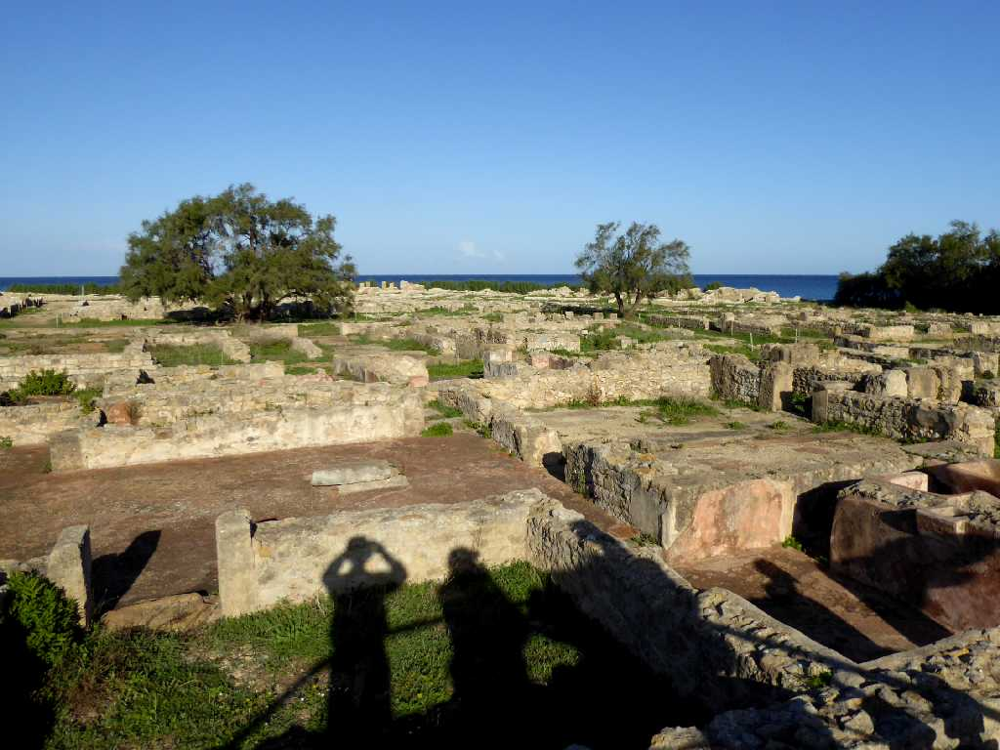
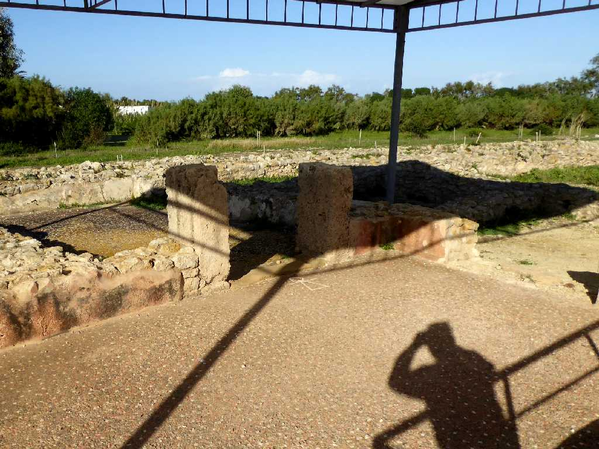
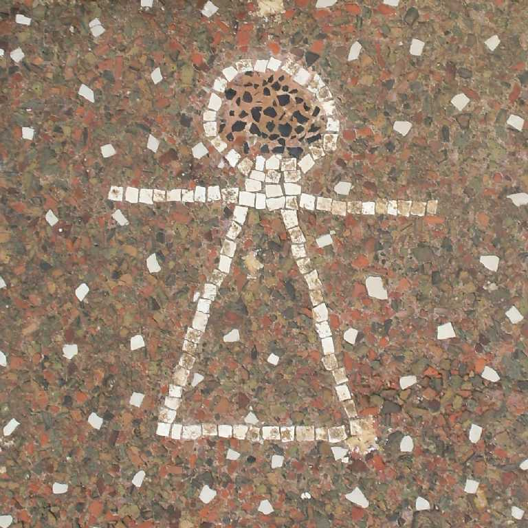
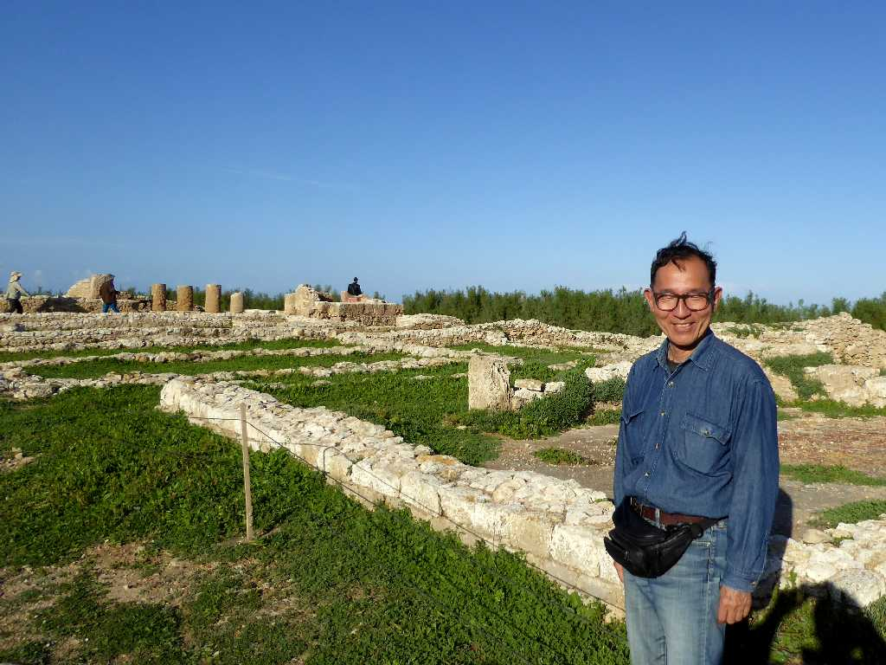

Kerkouane Cap Bon
カルタゴの都市遺跡ケルクアンはローマ人によって再建されなかったため紀元前４世紀から紀元前３世紀までのフェニキア人のカルタゴの街並みが残っている


Carthage Sign Mosaic Kerkouane
他のカルタゴの街はローマ人との３回にわたるポエニ戦争により完全に破壊されたため唯一のフェニキア人の古代都市遺跡と考えられている

November 21 2018 Kerkouane